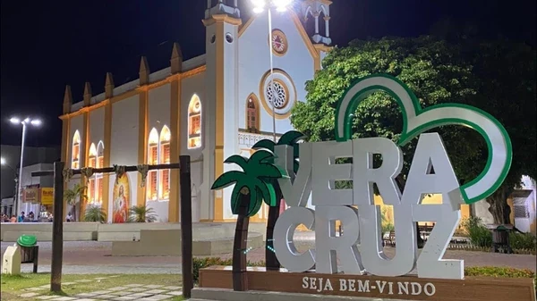

Bem-vindo ao Conecta Vera Cruz
Um passeio digital pelas memórias, comunidades e paisagens que fazem Vera Cruz ser muito mais que um destino de verão.
Conheça Vera Cruz além das praias
O Conecta Vera Cruz é um projeto educativo criado para apresentar a história, a cultura, os patrimônios, os saberes populares e as lembranças das comunidades do município.
Aqui, cada lugar conta uma história. Igrejas, trilhas, praias, ruínas, festas, formas de trabalho e tradições ganham espaço em páginas produzidas a partir de pesquisas e da participação dos moradores.
Por meio dos QR Codes, estudantes, moradores e visitantes poderão abrir conteúdos sobre cada ponto diretamente no celular. É a tecnologia ajudando a memória a sair do arquivo e caminhar pela ilha.


Explore as belezas naturais
Praias, manguezais, trilhas, enseadas e caminhos costeiros formam um território onde natureza e vida comunitária caminham juntas.
Descubra as comunidadesÚltimas do Blog
Carregando as publicações mais recentes...
Nossa História
Descubra a formação do município, os patrimônios, as manifestações culturais e os modos de viver que atravessam gerações em Vera Cruz, no coração da Ilha de Itaparica.
O site conecta documentos, pesquisas escolares, relatos, fotografias e curiosidades para que a história local seja conhecida por quem mora aqui e por quem chega para visitar.

Compartilhe uma lembrança da comunidade
Você conhece uma história, tradição, lenda, expressão ou curiosidade de Vera Cruz? Registre sua lembrança e ajude a preservar a memória do território.
Memórias compartilhadas
Compartilhe a primeira história ou curiosidade sobre Vera Cruz.
Explore bairros e comunidades
Clique para conhecer histórias, patrimônios, tradições, paisagens e curiosidades de cada localidade.